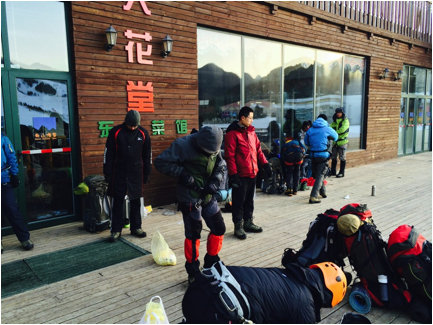
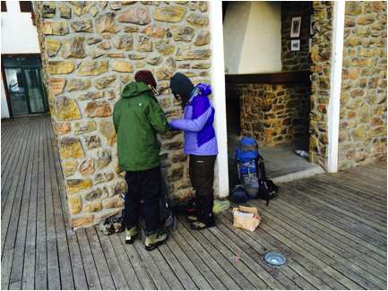
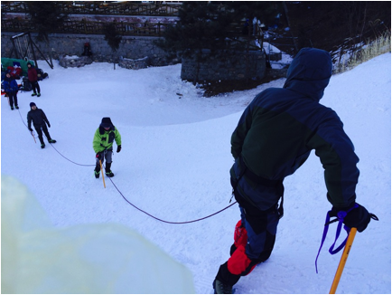
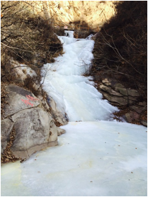
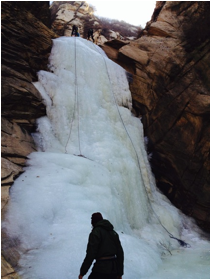
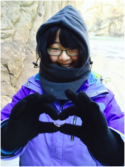
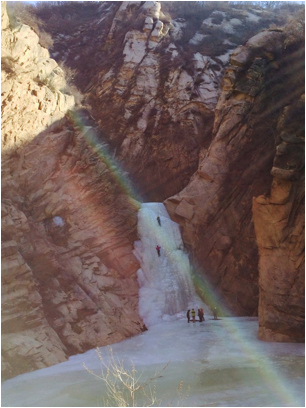
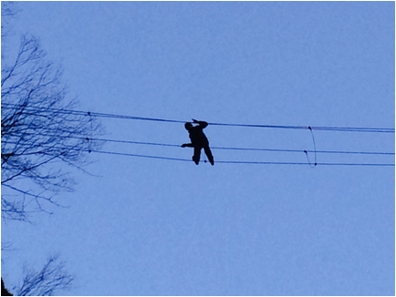
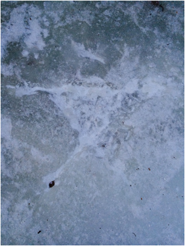
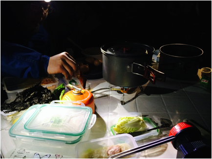

发信人: zhanglihaoac (澄澈的天空), 信区: outdoor
标 题: 2015冬训个人总结_张立昊
发信站: 饮水思源 (2015年02月02日18:20:57 星期一)
冬训就这么结束了，度过了一段“艰苦”但非常愉快的时光，感谢所有小伙伴们的
陪伴啦～
下面来说说一些具体的细节(☆_☆)
记录篇
16号大家一起粗发啦，顶着坐票吵吵嚷嚷过了一夜，17号便在如家安顿下来了，傍
晚高神过来请大家吃一顿好的，然后，忘记拍照啦，大概是吃得太开心了，高神见谅哈~~
~
17号就开始冬训啦，大家来到滑雪场安顿了下来，准备训练。
画面中心那只动作好奇怪，恩~~
 screen.width - 200){this.width = screen.width - 200}">
这是在角落里做啥呢~~
 screen.width - 200){this.width = screen.width - 200}">
雪上的结组，雪上的活动相对于冰壁来说真是各种无压力呢
 screen.width - 200){this.width = screen.width - 200}">
欢快的雪上训练结束后，回到城里整理下便到了天池峡谷，
准备开始玩冰喽。
第一次看到冰河，第一次看到冰瀑，有点点的小激动啊啊~
 screen.width - 200){this.width = screen.width - 200}">
 screen.width - 200){this.width = screen.width - 200}">
不好好学习的孩纸啊，这是送给谁的呢2333
 screen.width - 200){this.width = screen.width - 200}">
screen.width - 200){this.width = screen.width - 200}">
太阳出来了好棒！
 screen.width - 200){this.width = screen.width - 200}">
这个可以算得上花样作死总冠军吗~~
 screen.width - 200){this.width = screen.width - 200}">
爱的告白吗，可是怎么女主还没看到就擦除了呢。。。。
 screen.width - 200){this.width = screen.width - 200}">
晚饭还是不错的啊，虽然没有会员线那么腐败啦~~
 screen.width - 200){this.width = screen.width - 200}">
某一组貌似气氛不错呢，恩~~
新人装备技能注意点总结篇
1、高山靴要尽量绑紧，不然穿上冰爪以后使用德式步伐攀冰时，需要一直做踮脚尖的动作
，不仅很累，并且严重缺乏安全感，给人不敢继续往上攀的感觉，导致大量依靠引体向上
攀冰。判断绑紧的标准是下蹲时脚踝部位受到来自登山鞋较大的阻碍感。
2、冰爪是否绑紧影响到冰爪的性能以及脱落的可能性，协会的绿色冰爪是否绑紧对爆爪的
可能性影响较大。协会的分段绑冰爪的方法还是很值得推荐的。
3、攀冰注意点：镐打稳后脚上升时必须注意选择踢冰落脚点，第一次攀冰可能会盲目踢冰
，导致体力大量耗费，并且脚上不稳。
4、安全带的使用：有无滑坠情况下使用的带子不一样，先锋时尤其需要注意，这一次冰坡
先锋基本上培训没有在这方面加以强调，以后培训可以把这一点加进去。
5、雪坡上冰镐制动在速度较快时一定要把身体压上去，光靠手的力量制动力太低。
--
※ 来源:·饮水思源 bbs.sjtu.edu.cn·[FROM: 10.187.84.43]
※ 修改:·zhanglihaoac 于 2015年02月02日18:23:05 修改本文·[FROM: 10.187.84.43]
※ 修改:·zhanglihaoac 于 2015年02月02日18:24:07 修改本文·[FROM: 10.187.84.43]
※ 修改:·zhanglihaoac 于 2015年02月02日18:24:30 修改本文·[FROM: 10.187.84.43]
※ 修改:·zhanglihaoac 于 2015年02月02日18:24:54 修改本文·[FROM: 10.187.84.43]
※ 修改:·zhanglihaoac 于 2015年02月02日18:29:25 修改本文·[FROM: 10.187.84.43]
※ 修改:·zhanglihaoac 于 2015年02月02日18:29:46 修改本文·[FROM: 10.187.84.43]
※ 修改:·zhanglihaoac 于 2015年02月02日20:54:15 修改本文·[FROM: 10.187.84.43]
※ 修改:·zhanglihaoac 于 2015年02月02日20:54:27 修改本文·[FROM: 10.187.84.43]
|